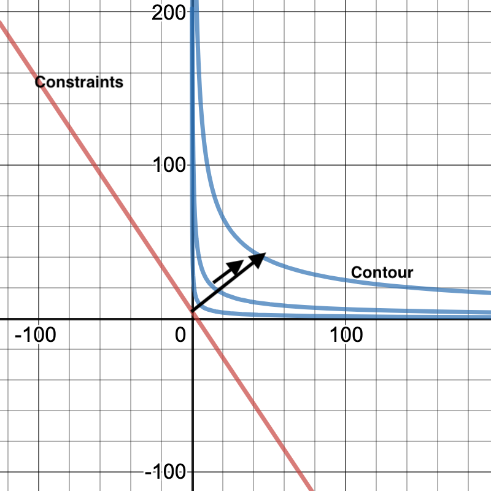

Optimization Learning Notes
In the past year, I started to pick up some optimization algorithms in work to solve problems like finding optimal prices to maximize business' profits with constraints. While memory is still fresh, I decided to write down my learning notes here. This is not an exhaustive survey of optimization algorithms, it only serves as the learning notes of the optimization algorithms which I have exposed so far.
Optimization Overview
There are different ways to categorize the optimization algorithm. Depends on the objective function, we can have linear or non-linear optimization. Based on the input type, we can have numeric optimization and discrete optimization. There are optimizations with constraints and without any constraints. Depends on the number of objective functions, we can have single and multiple objective optimizations.
1. No constraints and differentiable objective function
The first scenario that comes to my mind is when we have a differentiable objective function without any constraints.
1.1 Gradient Descent
When we are searching the values, Gradient descent tries to go in the direction such that the value of cost function f(x+\delta x) at the next step is smaller than the current one f(x). To find the direction of the movement, we take the derivative of the function at each step, assume the function is differentiable. Depends on how far we move each step, the algorithm can take a long time to converge, or even not converges.
1.2 Newton Method
If the cost function is also twice differnetiable, then we can use newton method, and quasi newton method according to Taylor expansion.
Taylor Expansion
Given a real or complex twice differentiable function f, then the value at point \(x_0\) can be approximated as \( f(x_0) + f'(x_0)(x-x_0) + \frac{1}{2}f'(x_0)(x-a)^2 \)
The Newton Method, not only takes the direction of the movement but also the velocity(second derivative) into account. Therefore, using the Newton method is more efficient when updating each step. But sometimes we don't have the second derivative.
1.3 Quasi-Newton Method
To solve the problem of the newton method in the case we don't have the second derivative, Quasi-Newton can be used. The main difference is that Quasi-Newton uses an approximation of the second derivative to replace the derivative to do the computation.
1.4 Why not use an analytical solution?
Consider that since we can take the derivatives, why not just set the derivative of the objective function as zero, and then solve analytically. One main reason is that sometimes we have a huge dataset and multiple variables, the computation time can be longer if we need to do matrix transformation, but gradient descent or the newton method is iterative, so it can be less expensive.
2. Not differentiable?
In reality, we do not have such optimistic cases. Not every objective function is differentiable. Consider a discrete case below.
Example, the traveling salesman
The traveling salesman is a classical discrete optimization problem. The salesman starting from city A, and travel N cities, and only one time for each city, and eventually come back to city A, what is the shortest path?
In this case, we can not find an analytical solution. The brute force solution is that we iterate all permutation which has a time complexity of O(N!). There are algorithms we can use here such as simulated annealing, GA, random hill climbing.
I summarize the algorithms below. These algorithms can be effective in discrete cases.
2.1 Genetic Algorithm
Genetic algorithm is one type of evolutionary algorithm. The algorithm uses the idea from biology to mimic natural selection. Take the traveling salesman as an example. The genetic algorithm first randomly generates a population (a set of routes), and then rank the routes by fitness, in this case, it is the shortest distance. The next step is to randomly select two routes as the 'parent route' and pass the elements in each parent route to make a 'child'. This process is known as crossover. To explore more possibilities, the final step is to perform mutation which is randomly select two cities in each parent route to swap with a predefined probability(say 3%) The child serves as the next generation and we repeat to full. Over time, it will generate a better(shorter distance) generation.
Because of the mutation and crossover, We do not always reach the global optimal but can reach the local optimum fairly quickly.
2.2 Simulated Annealing
This algorithm's idea comes from annealing the metal. If we cool the meta fast, then the irons in the meta are randomly spread, but if we cool it slowly, then it will be more structured, and more stable. The algorithms work in the following way. We have an initial temperature, and in the next step, we evaluate the fitness of the route and decide whether to switch to the next possible route with a probability. The probability is associated with temperature. We decrease temperature over time, so we are less likely to back to the previous path. By doing this, we are less likely to be stuck at a local minimum. More likely to reach the global optimum.
2.3 Hill-Climbing with Random Restart
Hill climbing is straightforward as its name suggests. We start with a random path and find the neighbor path, compare it with the current path to see if it is better, if it is, then we select the next path. The problem is also about stuck at a local minimum. Then we introduce random restart into it, so it does not get into local optimum.
3. Optimization with constraints
In reality, we usually have constraints when doing optimization. Based on the constraint type, there are different methods to optimize.
3.1 Lagrange multiplier for Equality constraint only
If the constraint can be expressed as equality, Then we can use Lagrange Multiplier to solve the algorithm. For example, a retail business wants to maximize its profits given certain constraints of the budget. The cost is labor and raw material. Revenue is a function of labor and raw material. In this scenario, we want to maximize the revenue function f. Let x, y denote the labor cost and raw material. Then both f and the cost function g are functions of x and y. We want to max out the budget, thus g(x,y) ideally should be equal to budget (c).
The optimization problem can be formulated as the following.
\[ max f(x,y) \]
given the constraint that \( g(x,y)= c \)
where c is a constant.

We want the coutour to barely touch the constraints. To do that, the vector perpendicular to the tangent line at that intersection point should go the same direction as the gradient of the constraint function.
That is to say,
\[ \nabla f = \lambda \nabla g \]
which is equivalent to
\[ \frac{\partial f}{\partial x} = \lambda \frac{\partial g}{\partial x} \]
\[ \frac{\partial f}{\partial y} = \lambda \frac{\partial g}{\partial y} \]
where \( \lambda \) is a constant. Solve the equation above, we can get the value of x and y.
3.2 Interior point method for inequality constraints
However, the above case is a very strict constraint. There are times we face an inequality constraint. In this case, we can use the interior point method such as the barrier function to convert it to a non-constrain problem and then solve it.